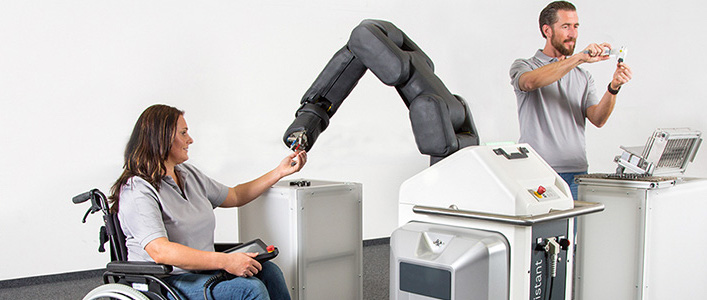
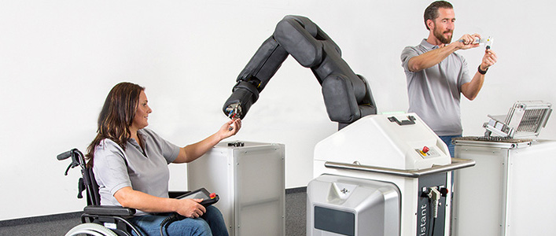

Two pilot schemes have been launched in Germany with an aim to increase workplace inclusion in manufacturing jobs. Robert Bosch GmbH's mobile manufacturing assistant has been implemented by ISAK, a company that give assembly line jobs to people with severe disabilities. The AQUIAS project aims to increase inclusion in the workplace for people with disabilities.
 

High-precision sensors tell the robotic arms to stop moving when a person gets close. This signal is so fast and precise that the otherwise standard safety barrier is no longer needed, making it possible for machines and people to work hand in hand. Solutions like this could completely redesign how humans and robots share tasks in the manufacturing industry. The robots will eventually be modified to provide specialised support for each each individual employee.

This project will enable people with severe disabilities to benefit from future robotic solutions. As part of the AQUIAS project, Bosch is devloping solutions that enable people with severe disabilites to work with mobile manufacturing assistants. Companies like ISAK will increase the inclusion and employability of disabled people, benefitting both indivudals and companies.